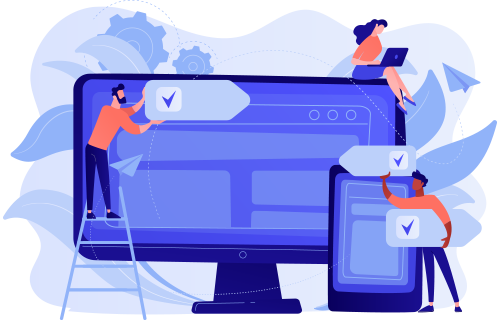

Subscribe Now to Our Newsletter
A NexTech é uma plataforma inovadora e especializada no desenvolvimento de cursos online voltados para o ensino de programação e áreas relacionadas à tecnologia. Nosso compromisso é oferecer uma experiência de aprendizado de alta qualidade, combinando expertise técnica com uma abordagem pedagógica eficaz para garantir o sucesso de nossos alunos.
Desenvolvemos cursos dinâmicos e interativos, utilizando uma combinação de videoaulas, exercícios práticos, quizzes e desafios de programação, para proporcionar uma imersão total nos conteúdos. Nossa metodologia é projetada para atender tanto iniciantes quanto profissionais que buscam aprofundar seus conhecimentos.
A NexTech se dedica a manter seu portfólio de cursos sempre atualizado com as últimas tendências e tecnologias emergentes. Nossos instrutores são especialistas com vasta experiência no mercado e buscam constantemente integrar as melhores práticas e ferramentas mais relevantes do setor.
Tecnologia
Multiplataforma
Utilizamos as melhores ferramentas tecnológicas disponíveis para garantir a estabilidade e a fluidez do aprendizado. A plataforma é desenvolvida com tecnologia de ponta, garantindo uma navegação rápida e sem interrupções, com recursos como fóruns de discussão, suporte ao vivo e feedback personalizado.
Oferecemos uma plataforma acessível de qualquer lugar e a qualquer momento. Nossos cursos podem ser feitos por desktop, tablet ou smartphone, permitindo que os alunos aprendam no seu próprio ritmo, de acordo com sua disponibilidade e necessidades.